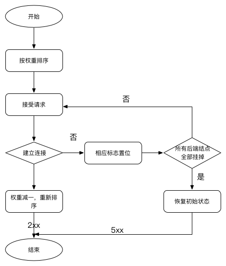

Nginx负载均衡配置与监控
Nginx环境配置
- 操作环境以及配置
- Nginx版本：1.15.11
- Linux系统版本：CentOS 7.6 内核版本：3.10
- VPS配置：16cores 16GB内存 100GB高效云盘
编译安装
1 下载源码
#下载 wget http://nginx.org/download/nginx-1.15.11.tar.gz #解压 tar -xzf nginx-1.15.11.tar.gz cd nginx-1.15.11
2.2 安装编译环境
yum update
yum -y install gcc pcre pcre-devel zlib zlib-devel openssl openssl-devel2.3 编译安装
其实首次编译安装，我并没有安装模块，后续需要功能模块的时候再添加。
# 添加Nginx组
groupadd nginx
# 添加Nginx用户
useradd nginx -g nginx -s /sbin/nologin -M
# 编译配置
./configure --user=nginx \ # 设置用户名
--group=nginx \ # 设置用户组
--prefix=/usr/local/nginx \ # 设置安装位置
--with-http_stub_status_module \ # 用来监控 Nginx 的当前状态
--with-http_ssl_module \ # 打开HTTPS功能
--with-http_realip_module \ # 允许改变客户端请求头中X-Real-IP 或 X-Forwarded-For等, 可用于记录客户IP
--with-http_gzip_static_module #gzip压缩
# 构建和安装
make && make install2.4 测试
/usr/local/nginx/sbin/nginx -V输出类似如下：
nginx version: nginx/1.15.11
built by gcc 4.8.5 20190424 (Red Hat 4.8.5-28) (GCC)
built with OpenSSL 1.0.2k-fips 26 Jan 2019
TLS SNI support enabled
configure arguments: --user=www --group=www --prefix=/usr/local/nginx --with-http_ssl_module --with-http_stub_status_module --with-threads2.5 启动Nginx
cd /usr/local/nginx
./sbin/nginx再通过请求访问信息
curl http://localhost:80得到以下输出信息：
<!DOCTYPE html>
<html>
<head>
<title>Welcome to nginx!</title>
<style>
body {
width: 35em;
margin: 0 auto;
font-family: Tahoma, Verdana, Arial, sans-serif;
}
</style>
</head>
<body>
<h1>Welcome to nginx!</h1>
<p>If you see this page, the nginx web server is successfully installed and
working. Further configuration is required.</p>
<p>For online documentation and support please refer to
<a href="http://nginx.org/">nginx.org</a>.<br/>
Commercial support is available at
<a href="http://nginx.com/">nginx.com</a>.</p>
<p><em>Thank you for using nginx.</em></p>
</body>
</html>说明Nginx安装完成。然后暂时关闭Nginx服务：
/usr/local/nginx/sbin/nginx -s stop2.6 配置开机自动启动
vim /etc/init.d/nginx输入以下内容：
#!/bin/sh
#
# nginx - this script starts and stops the nginx daemon
#
# chkconfig: - 85 15
# description: NGINX is an HTTP(S) server, HTTP(S) reverse \
# proxy and IMAP/POP3 proxy server
# processname: nginx
# config: /usr/local/nginx/conf/nginx.conf
# config: /etc/sysconfig/nginx
# pidfile: /usr/local/nginx/logs/nginx.pid
# Source function library.
. /etc/rc.d/init.d/functions
# Source networking configuration.
. /etc/sysconfig/network
# Check that networking is up.
[ "$NETWORKING" = "no" ] && exit 0
nginx="/usr/local/nginx/sbin/nginx"
prog=$(basename $nginx)
NGINX_CONF_FILE="/usr/local/nginx/conf/nginx.conf"
[ -f /etc/sysconfig/nginx ] && . /etc/sysconfig/nginx
lockfile=/var/lock/subsys/nginx
make_dirs() {
# make required directories
user=`$nginx -V 2>&1 | grep "configure arguments:" | sed 's/[^*]*--user=\([^ ]*\).*/\1/g' -`
if [ -z "`grep $user /etc/passwd`" ]; then
useradd -M -s /bin/nologin $user
fi
options=`$nginx -V 2>&1 | grep 'configure arguments:'`
for opt in $options; do
if [ `echo $opt | grep '.*-temp-path'` ]; then
value=`echo $opt | cut -d "=" -f 2`
if [ ! -d "$value" ]; then
# echo "creating" $value
mkdir -p $value && chown -R $user $value
fi
fi
done
}
start() {
[ -x $nginx ] || exit 5
[ -f $NGINX_CONF_FILE ] || exit 6
make_dirs
echo -n $"Starting $prog: "
daemon $nginx -c $NGINX_CONF_FILE
retval=$?
echo
[ $retval -eq 0 ] && touch $lockfile
return $retval
}
stop() {
echo -n $"Stopping $prog: "
killproc $prog -QUIT
retval=$?
echo
[ $retval -eq 0 ] && rm -f $lockfile
return $retval
}
restart() {
configtest || return $?
stop
sleep 1
start
}
reload() {
configtest || return $?
echo -n $"Reloading $prog: "
killproc $nginx -HUP
RETVAL=$?
echo
}
force_reload() {
restart
}
configtest() {
$nginx -t -c $NGINX_CONF_FILE
}
rh_status() {
status $prog
}
rh_status_q() {
rh_status >/dev/null 2>&1
}
case "$1" in
start)
rh_status_q && exit 0
$1
;;
stop)
rh_status_q || exit 0
$1
;;
restart|configtest)
$1
;;
reload)
rh_status_q || exit 7
$1
;;
force-reload)
force_reload
;;
status)
rh_status
;;
condrestart|try-restart)
rh_status_q || exit 0
;;
*)
echo $"Usage: $0 {start|stop|status|restart|condrestart|try-restart|reload|force-reload|configtest}"
exit 2
esac赋予脚本可执行权限：
chmod a+x /etc/init.d/nginx将nginx服务加入chkconfig管理列表：
chkconfig --add /etc/init.d/nginx
chkconfig nginx on
# 启动
systemctl start nginx这样nginx就启动了。
番外：通过systemctl配置系统服务，实现自动重启。参考地址：https://www.jianshu.com/p/ca5ee5f7075c
2.7 Nginx常用命令
/usr/local/nginx/sbin/nginx -s reload # 重新加载
/usr/local/nginx/sbin/nginx -t # 检测配置文件是否有错误
/usr/local/nginx/sbin/nginx # 启动nginx
/usr/local/nginx/sbin/nginx -s stop # 停止nginx配置内容详解
######Nginx配置文件nginx.conf中文详解#####
#定义Nginx运行的用户和用户组
user www www;
#nginx进程数，建议设置为等于CPU总核心数。
worker_processes 8;
#全局错误日志定义类型，[ debug | info | notice | warn | error | crit ]
error_log /usr/local/nginx/logs/error.log info;
#进程pid文件
pid /usr/local/nginx/logs/nginx.pid;
#指定进程可以打开的最大描述符：数目
#工作模式与连接数上限
#这个指令是指当一个nginx进程打开的最多文件描述符数目，理论值应该是最多打开文件数（ulimit -n）与nginx进程数相除，但是nginx分配请求并不是那么均匀，所以最好与ulimit -n 的值保持一致。
#现在在linux 2.6内核下开启文件打开数为65535，worker_rlimit_nofile就相应应该填写65535。
#这是因为nginx调度时分配请求到进程并不是那么的均衡，所以假如填写10240，总并发量达到3-4万时就有进程可能超过10240了，这时会返回502错误。
worker_rlimit_nofile 65535;
events
{
#参考事件模型，use [ kqueue | rtsig | epoll | /dev/poll | select | poll ]; epoll模型
#是Linux 2.6以上版本内核中的高性能网络I/O模型，linux建议epoll，如果跑在FreeBSD上面，就用kqueue模型。
#补充说明：
#与apache相类，nginx针对不同的操作系统，有不同的事件模型
#A）标准事件模型
#Select、poll属于标准事件模型，如果当前系统不存在更有效的方法，nginx会选择select或poll
#B）高效事件模型
#Kqueue：使用于FreeBSD 4.1+, OpenBSD 2.9+, NetBSD 2.0 和 MacOS X.使用双处理器的MacOS X系统使用kqueue可能会造成内核崩溃。
#Epoll：使用于Linux内核2.6版本及以后的系统。
#/dev/poll：使用于Solaris 7 11/99+，HP/UX 11.22+ (eventport)，IRIX 6.5.15+ 和 Tru64 UNIX 5.1A+。
#Eventport：使用于Solaris 10。 为了防止出现内核崩溃的问题， 有必要安装安全补丁。
use epoll;
#单个进程最大连接数（最大连接数=连接数*进程数）
#根据硬件调整，和前面工作进程配合起来用，尽量大，但是别把cpu跑到100%就行。每个进程允许的最多连接数，理论上每台nginx服务器的最大连接数为。
worker_connections 65535;
#keepalive超时时间。
keepalive_timeout 60;
#客户端请求头部的缓冲区大小。这个可以根据你的系统分页大小来设置，一般一个请求头的大小不会超过1k，不过由于一般系统分页都要大于1k，所以这里设置为分页大小。
#分页大小可以用命令getconf PAGESIZE 取得。
#[root@web001 ~]# getconf PAGESIZE
#4096
#但也有client_header_buffer_size超过4k的情况，但是client_header_buffer_size该值必须设置为“系统分页大小”的整倍数。
client_header_buffer_size 4k;
#这个将为打开文件指定缓存，默认是没有启用的，max指定缓存数量，建议和打开文件数一致，inactive是指经过多长时间文件没被请求后删除缓存。
open_file_cache max=65535 inactive=60s;
#这个是指多长时间检查一次缓存的有效信息。
#语法:open_file_cache_valid time 默认值:open_file_cache_valid 60 使用字段:http, server, location 这个指令指定了何时需要检查open_file_cache中缓存项目的有效信息.
open_file_cache_valid 80s;
#open_file_cache指令中的inactive参数时间内文件的最少使用次数，如果超过这个数字，文件描述符一直是在缓存中打开的，如上例，如果有一个文件在inactive时间内一次没被使用，它将被移除。
#语法:open_file_cache_min_uses number 默认值:open_file_cache_min_uses 1 使用字段:http, server, location 这个指令指定了在open_file_cache指令无效的参数中一定的时间范围内可以使用的最小文件数,如果使用更大的值,文件描述符在cache中总是打开状态.
open_file_cache_min_uses 1;
#语法:open_file_cache_errors on | off 默认值:open_file_cache_errors off 使用字段:http, server, location 这个指令指定是否在搜索一个文件时记录cache错误.
open_file_cache_errors on;
}
#设定http服务器，利用它的反向代理功能提供负载均衡支持
http
{
#文件扩展名与文件类型映射表
include mime.types;
#默认文件类型
default_type application/octet-stream;
#默认编码
#charset utf-8;
#服务器名字的hash表大小
#保存服务器名字的hash表是由指令server_names_hash_max_size 和server_names_hash_bucket_size所控制的。参数hash bucket size总是等于hash表的大小，并且是一路处理器缓存大小的倍数。在减少了在内存中的存取次数后，使在处理器中加速查找hash表键值成为可能。如果hash bucket size等于一路处理器缓存的大小，那么在查找键的时候，最坏的情况下在内存中查找的次数为2。第一次是确定存储单元的地址，第二次是在存储单元中查找键 值。因此，如果Nginx给出需要增大hash max size 或 hash bucket size的提示，那么首要的是增大前一个参数的大小.
server_names_hash_bucket_size 128;
#客户端请求头部的缓冲区大小。这个可以根据你的系统分页大小来设置，一般一个请求的头部大小不会超过1k，不过由于一般系统分页都要大于1k，所以这里设置为分页大小。分页大小可以用命令getconf PAGESIZE取得。
client_header_buffer_size 32k;
#客户请求头缓冲大小。nginx默认会用client_header_buffer_size这个buffer来读取header值，如果header过大，它会使用large_client_header_buffers来读取。
large_client_header_buffers 4 64k;
#设定通过nginx上传文件的大小
client_max_body_size 8m;
#开启高效文件传输模式，sendfile指令指定nginx是否调用sendfile函数来输出文件，对于普通应用设为 on，如果用来进行下载等应用磁盘IO重负载应用，可设置为off，以平衡磁盘与网络I/O处理速度，降低系统的负载。注意：如果图片显示不正常把这个改成off。
#sendfile指令指定 nginx 是否调用sendfile 函数（zero copy 方式）来输出文件，对于普通应用，必须设为on。如果用来进行下载等应用磁盘IO重负载应用，可设置为off，以平衡磁盘与网络IO处理速度，降低系统uptime。
sendfile on;
#开启目录列表访问，合适下载服务器，默认关闭。
autoindex on;
#此选项允许或禁止使用socke的TCP_CORK的选项，此选项仅在使用sendfile的时候使用
tcp_nopush on;
tcp_nodelay on;
#长连接超时时间，单位是秒
keepalive_timeout 120;
#FastCGI相关参数是为了改善网站的性能：减少资源占用，提高访问速度。下面参数看字面意思都能理解。
fastcgi_connect_timeout 300;
fastcgi_send_timeout 300;
fastcgi_read_timeout 300;
fastcgi_buffer_size 64k;
fastcgi_buffers 4 64k;
fastcgi_busy_buffers_size 128k;
fastcgi_temp_file_write_size 128k;
#gzip模块设置
gzip on; #开启gzip压缩输出
gzip_min_length 1k; #最小压缩文件大小
gzip_buffers 4 16k; #压缩缓冲区
gzip_http_version 1.0; #压缩版本（默认1.1，前端如果是squid2.5请使用1.0）
gzip_comp_level 2; #压缩等级
gzip_types text/plain application/x-javascript text/css application/xml application/json; #压缩类型，默认就已经包含textml，所以下面就不用再写了，写上去也不会有问题，但是会有一个warn。
gzip_vary on;
#开启限制IP连接数的时候需要使用
#limit_zone crawler $binary_remote_addr 10m;
#负载均衡配置
upstream jh.w3cschool.cn {
#upstream的负载均衡，weight是权重，可以根据机器配置定义权重。weigth参数表示权值，权值越高被分配到的几率越大。
server 192.168.80.121:80 weight=3;
server 192.168.80.122:80 weight=2;
server 192.168.80.123:80 weight=3;
#nginx的upstream目前支持4种方式的分配
#1、轮询（默认）
#每个请求按时间顺序逐一分配到不同的后端服务器，如果后端服务器down掉，能自动剔除。
#2、weight
#指定轮询几率，weight和访问比率成正比，用于后端服务器性能不均的情况。
#例如：
#upstream bakend {
# server 192.168.0.14 weight=10 max_fails=2 fail_timeout=30;
# server 192.168.0.15 weight=10;
#}
#2、ip_hash
#每个请求按访问ip的hash结果分配，这样每个访客固定访问一个后端服务器，可以解决session的问题。
#例如：
#upstream bakend {
# ip_hash;
# server 192.168.0.14:88;
# server 192.168.0.15:80;
#}
#3、fair（第三方）
#按后端服务器的响应时间来分配请求，响应时间短的优先分配。
#upstream backend {
# server server1;
# server server2;
# fair;
#}
#4、url_hash（第三方）
#按访问url的hash结果来分配请求，使每个url定向到同一个后端服务器，后端服务器为缓存时比较有效。
#例：在upstream中加入hash语句，server语句中不能写入weight等其他的参数，hash_method是使用的hash算法
#upstream backend {
# server squid1:3128;
# server squid2:3128;
# hash $request_uri;
# hash_method crc32;
#}
#tips:
#upstream bakend
#在需要使用负载均衡的server中增加 proxy_pass http://bakend/;
#upstream sessionIdStream {
# 对cookie做hash运算
#set $key "";
#if ( $http_cookie ~* "ASP.NET_SessionId=(.+?)(?=;|$)") {
# set $key $1;
#}
# hash $key;
# server 127.0.0.1:9090 down;
# server 127.0.0.1:8080 weight=2;
# server 127.0.0.1:6060;
# server 127.0.0.1:7070 backup;
#}
#此处为对session做hash运算选择所要负载的服务器，在需要使用负载均衡的server中增加 proxy_pass http://sessionIdStream/;
#每个设备的状态设置为:
#1.down表示单前的server暂时不参与负载
#2.weight为weight越大，负载的权重就越大。
#3.max_fails：允许请求失败的次数默认为1.当超过最大次数时，返回proxy_next_upstream模块定义的错误
#4.fail_timeout:max_fails次失败后，暂停的时间。
#5.backup： 其它所有的非backup机器down或者忙的时候，请求backup机器。所以这台机器压力会最轻。
#nginx支持同时设置多组的负载均衡，用来给不用的server来使用。
#client_body_in_file_only设置为On 可以讲client post过来的数据记录到文件中用来做debug
#client_body_temp_path设置记录文件的目录 可以设置最多3层目录
#location对URL进行匹配.可以进行重定向或者进行新的代理 负载均衡
}
#虚拟主机的配置
server
{
#监听端口
listen 80;
#域名可以有多个，用空格隔开
server_name www.w3cschool.cn w3cschool.cn;
index index.html index.htm index.php;
root /data/www/w3cschool;
#对******进行负载均衡
location ~ .*.(php|php5)?$
{
fastcgi_pass 127.0.0.1:9000;
fastcgi_index index.php;
include fastcgi.conf;
}
#图片缓存时间设置
location ~ .*.(gif|jpg|jpeg|png|bmp|swf)$
{
expires 10d;
}
#JS和CSS缓存时间设置
location ~ .*.(js|css)?$
{
expires 1h;
}
#日志格式设定
#$remote_addr与$http_x_forwarded_for用以记录客户端的ip地址；
#$remote_user：用来记录客户端用户名称；
#$time_local： 用来记录访问时间与时区；
#$request： 用来记录请求的url与http协议；
#$status： 用来记录请求状态；成功是200，
#$body_bytes_sent ：记录发送给客户端文件主体内容大小；
#$http_referer：用来记录从那个页面链接访问过来的；
#$http_user_agent：记录客户浏览器的相关信息；
#通常web服务器放在反向代理的后面，这样就不能获取到客户的IP地址了，通过$remote_add拿到的IP地址是反向代理服务器的iP地址。反向代理服务器在转发请求的http头信息中，可以增加x_forwarded_for信息，用以记录原有客户端的IP地址和原来客户端的请求的服务器地址。
log_format access '$remote_addr - $remote_user [$time_local] "$request" '
'$status $body_bytes_sent "$http_referer" '
'"$http_user_agent" $http_x_forwarded_for';
#定义本虚拟主机的访问日志
access_log /usr/local/nginx/logs/host.access.log main;
access_log /usr/local/nginx/logs/host.access.404.log log404;
#对 "/" 启用反向代理
location / {
proxy_pass http://127.0.0.1:88;
proxy_redirect off;
proxy_set_header X-Real-IP $remote_addr;
#后端的Web服务器可以通过X-Forwarded-For获取用户真实IP
proxy_set_header X-Forwarded-For $proxy_add_x_forwarded_for;
#以下是一些反向代理的配置，可选。
proxy_set_header Host $host;
#允许客户端请求的最大单文件字节数
client_max_body_size 10m;
#缓冲区代理缓冲用户端请求的最大字节数，
#如果把它设置为比较大的数值，例如256k，那么，无论使用firefox还是IE浏览器，来提交任意小于256k的图片，都很正常。如果注释该指令，使用默认的client_body_buffer_size设置，也就是操作系统页面大小的两倍，8k或者16k，问题就出现了。
#无论使用firefox4.0还是IE8.0，提交一个比较大，200k左右的图片，都返回500 Internal Server Error错误
client_body_buffer_size 128k;
#表示使nginx阻止HTTP应答代码为400或者更高的应答。
proxy_intercept_errors on;
#后端服务器连接的超时时间_发起握手等候响应超时时间
#nginx跟后端服务器连接超时时间(代理连接超时)
proxy_connect_timeout 90;
#后端服务器数据回传时间(代理发送超时)
#后端服务器数据回传时间_就是在规定时间之内后端服务器必须传完所有的数据
proxy_send_timeout 90;
#连接成功后，后端服务器响应时间(代理接收超时)
#连接成功后_等候后端服务器响应时间_其实已经进入后端的排队之中等候处理（也可以说是后端服务器处理请求的时间）
proxy_read_timeout 90;
#设置代理服务器（nginx）保存用户头信息的缓冲区大小
#设置从被代理服务器读取的第一部分应答的缓冲区大小，通常情况下这部分应答中包含一个小的应答头，默认情况下这个值的大小为指令proxy_buffers中指定的一个缓冲区的大小，不过可以将其设置为更小
proxy_buffer_size 4k;
#proxy_buffers缓冲区，网页平均在32k以下的设置
#设置用于读取应答（来自被代理服务器）的缓冲区数目和大小，默认情况也为分页大小，根据操作系统的不同可能是4k或者8k
proxy_buffers 4 32k;
#高负荷下缓冲大小（proxy_buffers*2）
proxy_busy_buffers_size 64k;
#设置在写入proxy_temp_path时数据的大小，预防一个工作进程在传递文件时阻塞太长
#设定缓存文件夹大小，大于这个值，将从upstream服务器传
proxy_temp_file_write_size 64k;
}
#设定查看Nginx状态的地址
location /NginxStatus {
stub_status on;
access_log on;
auth_basic "NginxStatus";
auth_basic_user_file confpasswd;
#htpasswd文件的内容可以用apache提供的htpasswd工具来产生。
}
#本地动静分离反向代理配置
#所有jsp的页面均交由tomcat或resin处理
location ~ .(jsp|jspx|do)?$ {
proxy_set_header Host $host;
proxy_set_header X-Real-IP $remote_addr;
proxy_set_header X-Forwarded-For $proxy_add_x_forwarded_for;
proxy_pass http://127.0.0.1:8080;
}
#所有静态文件由nginx直接读取不经过tomcat或resin
location ~ .*.(htm|html|gif|jpg|jpeg|png|bmp|swf|ioc|rar|zip|txt|flv|mid|doc|ppt|
pdf|xls|mp3|wma)$
{
expires 15d;
}
location ~ .*.(js|css)?$
{
expires 1h;
}
}
include nginx-resin.conf; # 导入其他server的配置文件
}负载均衡策略
负载均衡的策略可以分为两大类：内置策略 和扩展策略
- 内置策略：一般会直接编译进Nginx内核，常用的有轮询、ip hash
- 扩展策略：fair、url hash等
1. 普通轮询策略
默认选项，当weight不指定时，各服务器权重相同， 每个请求按时间顺序逐一分配到不同的后端服务器，如果后端服务器down掉，能自动剔除。
upstream bakend {
server 10.11.0.1;
server 10.11.0.2;
server 10.11.0.3;
}2. 加权轮询策略
指定轮询几率，weight和访问比率成正比，用于后端服务器性能不均的情况。
upstream backend {
server 10.11.0.1 weight=3;
server 10.11.0.2 weight=7;
}权重越高，在被访问的概率越大，如上例，分别是30%，70%。
- 轮询流程图

首先将请求都分给高权重的机器，直到该机器的权值降到了比其他机器低，才开始将请求分给下一个高权重的机器；当所有后端机器都down掉时，nginx会立即将所有机器的标志位清成初始状态，以避免造成所有的机器都处在timeout的状态
ip hash方式
默认情况下，Nginx 会为你提供轮询作为负载均衡策略。
采用ip_hash策略解决登录信息丢失，如果客户已经访问了某个服务器，当用户再次访问时，会将该请求通过哈希算法，自动定位到同一个服务器，当然，如果所 hash 到的 server 当前不可用，则请求会被转移到其他server。
每个请求按访问ip的hash结果分配，这样每个访客固定访问一个后端服务器，可以解决session的问题。
upstream backend {
ip_hash;
server 10.11.0.1;
server 10.11.0.2;
}fair
根据后端服务器的响应时间判断负载情况，从中选出负载最轻的机器进行优先分配。
upstream backend {
server 10.11.0.1;
server 10.11.0.2;
fair;
}缺点：需要「负载均衡器」不停的去统计每一台后端服务器对请求的处理速度，比如一分钟统计一次，生成一个后端服务器处理速度的排行榜，然后「负载均衡器」根据这个排行榜去转发服务。
hash
这里举的例子是针对cookie中的某些项做hash操作，进行负载均衡。
upstream backend {
set $key "";
if ( $http_cookie ~* "ASP.NET_SessionId=(.+?)(?=;|$)") {
set $key $1;
}
hash $key;
server 10.11.0.1;
server 10.11.0.2;
}根据cookie内某些变量的不同，分配到不同的服务器上。在这个例子中，后端回传给浏览器的cookie中带有session信息，可以凭借该session信息进行后端负载均衡的操作，其效果约等同于ip_hash策略。
负载均衡问题
- Session同步问题
先对nginx采取轮询的负载均衡策略，监控请求后向转移到某台服务器的时候，发现请求失败的问题，通过监控日志，看到前后两个步骤的操作，它们对应的请求负载到不同的服务器上，导致错误。解决方案如下：
- 利用nginx负载均衡中的ip_hash策略或者对cookie做hash的策略，可以保证session同步，一个session只访问一台服务器，但是这样会导致负载压到单机上，不能进行请求分配。
- 对后端业务做无状态化处理，利用token替代session进行请求，用CPU负载换取无状态优势
- session中心化策略，利用Redis做session缓存，对session进行统一管理，但是如果Redis服务器出现问题，也会导致session失效，服务宕机的情况。
最后我们采用的是Session中心化策略，主要是考虑到整体业务进行改造成本太高。
- 文件传输和存储的问题
还是对nginx采取轮询的负载均衡策略，在上传文件时，文件上传到一台服务器，对文件操作的请求却负载到另一台服务器上，导致请求中文件丢失找不到的情况。解决方案如下：
- OSS服务引入，所有文件通过第三方OSS服务进行存储。
- 自建文件服务器，利用FastDFS等分布式存储服务进行。
- 服务器之间进行文件同步，利用共享文件夹以及共享空间，但存在同步不及时导致后续业务请求无法完成的情况。
最后我们采用的是自建文件服务器的策略。
整体部署图

意见和建议–来自阿里云技术交流会议
阿里云技术交流会议中，通过交流总结了如下内容：
- 阿里的经验总结和建设原则：
- 代码重构，尽可能拆分。业务层逐步拆分、合理拆分，尽可能拆到最小层级
- 尽可能容错。容错机制构建，监控、诊断、预案
- 尽可能只保证最终一致性。数据层级，在数据同步方面，追求最终一致性
- 尽可能缓存。缓存引入，多层级，拦截分批处理和计算
- 尽可能自动化。自动化部署，DevOps引入
- 尽可能云化。弹性伸缩，来之扩容，用完释放
- 针对当前我们的产品的建议：
- 数据库使用云数据库，不再进行VPS内的数据库搭建。
- 前后端分离，前端单独部署，后端接口化
- 引入消息队列
- 弹性伸缩
- 负载均衡
- 数据库
- 文件服务
- 消息队列
- 补充建议：
- 针对文件服务，采用OSS+CDN的策略
- 单体应用向分布式、容器化方向发展
- 架构驱动到数据驱动
参考文章
番外篇：docker的使用和配置
请参考:Linux日常运维操作